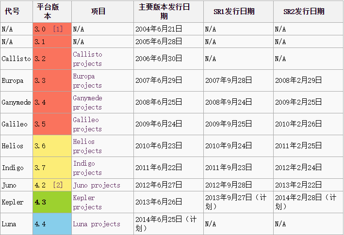

记录以J2EE开发采用MyEclipse IDE的常用插件

SVN
svn update site URL
svn offline package
FatJar
FatJar update site URL
Freemarker Editor
Freemarker Editor update site URL
安装时选择Jboss IDE即可
Drools插件
drools 5.5.0 update site URL
OneJar
OneJar官网
maven配置onejar打包
1
2
3
4
5
6
7
8
9
10
11
12
13
14
15
16
17
18
19
20
21
22
23
24
25
26
27
28
29
|
<plugin >
<groupId >org.apache.maven.plugins </groupId >
<artifactId >maven-jar-plugin </artifactId >
<configuration >
<archive >
<manifest >
<mainClass >gto.amo.mapper.app.form.Main </mainClass >
</manifest >
</archive >
</configuration >
</plugin >
<plugin >
<groupId >com.jolira </groupId >
<artifactId >onejar-maven-plugin </artifactId >
<version >1.4.4 </version >
<executions >
<execution >
<configuration >
<attachToBuild >true </attachToBuild >
<classifier >onejar </classifier >
</configuration >
<goals >
<goal >one-jar </goal >
</goals >
</execution >
</executions >
</plugin >
|